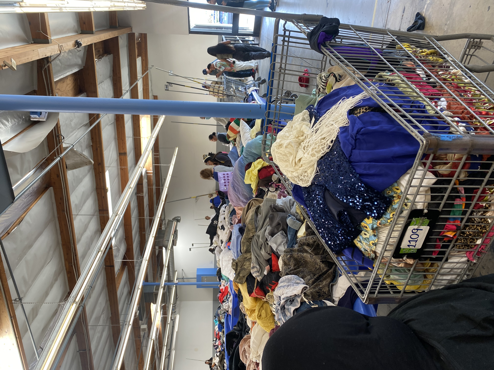
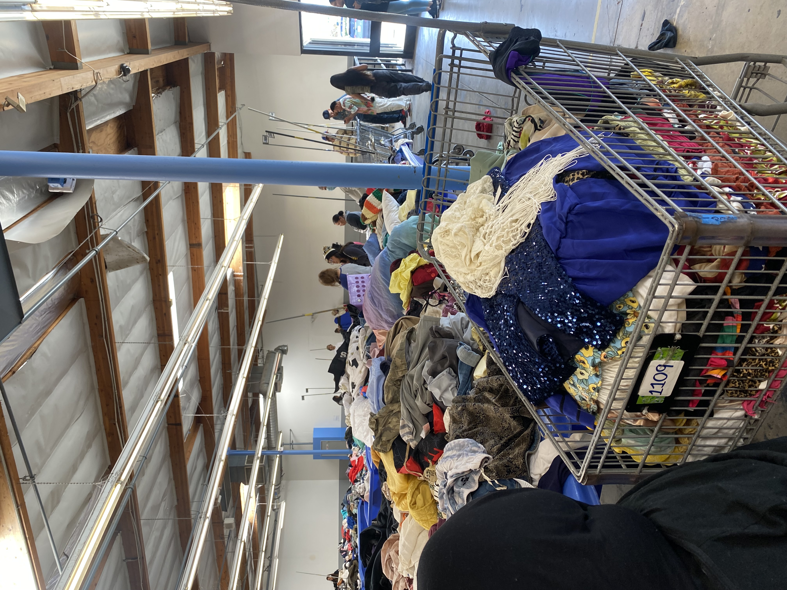
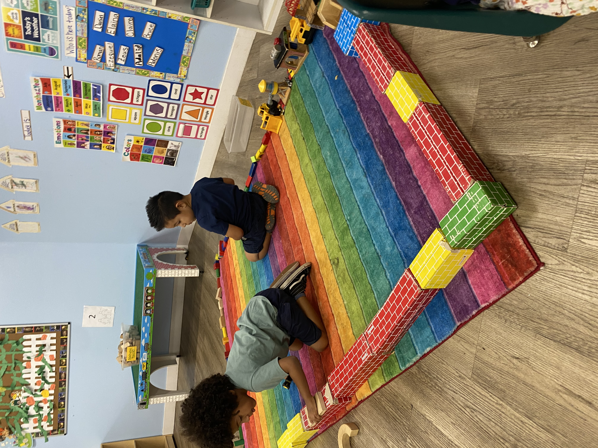
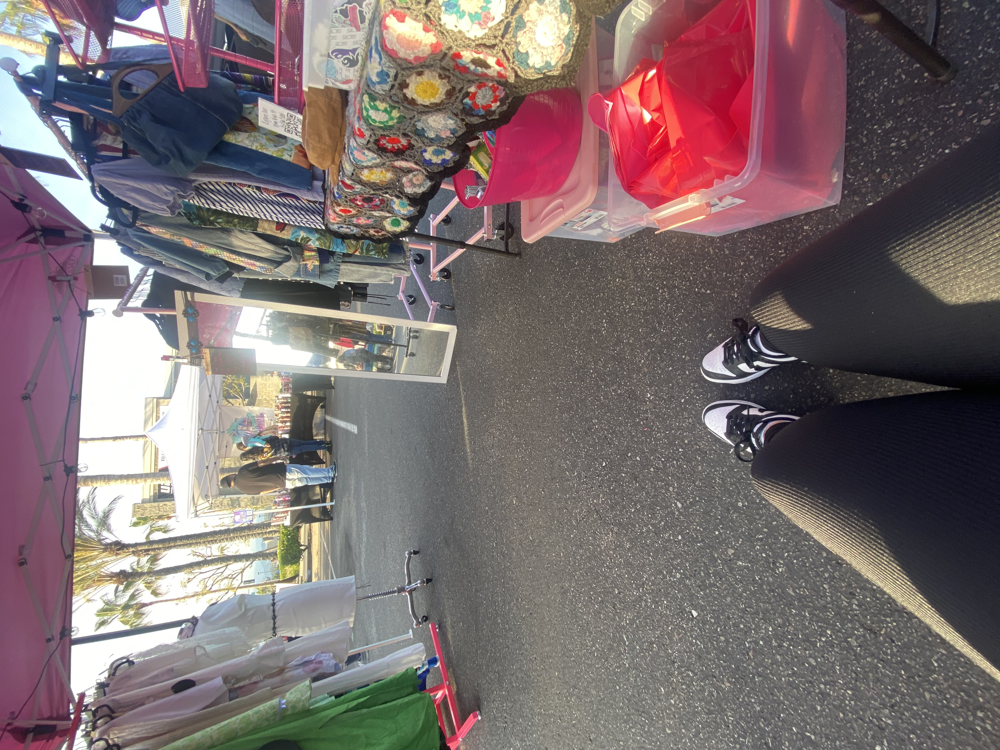
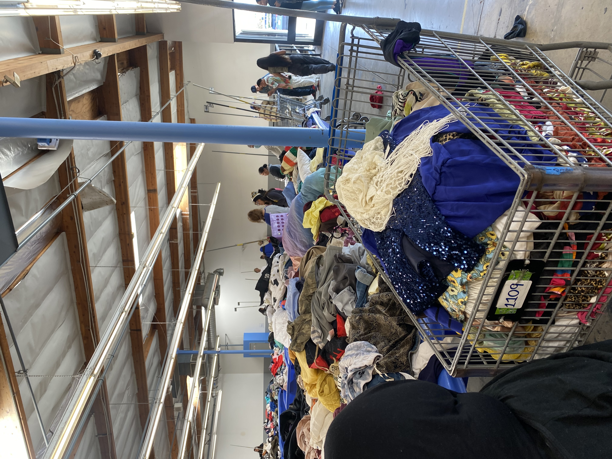
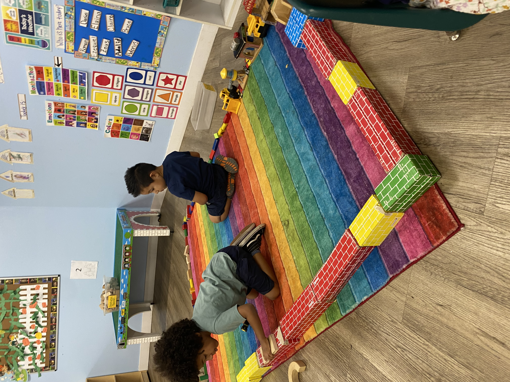
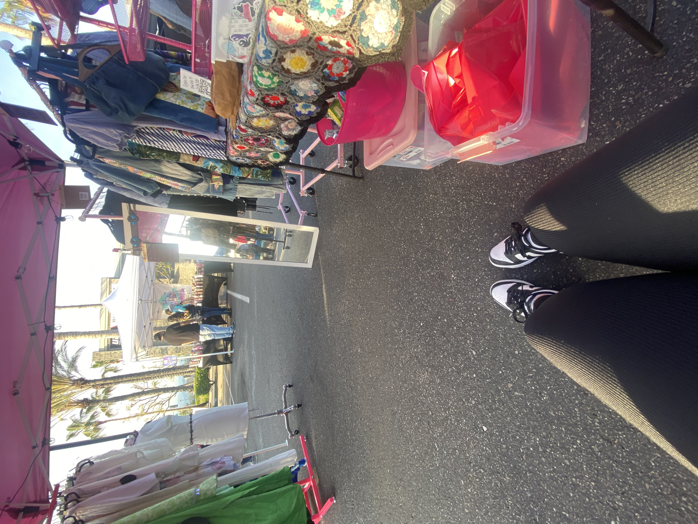

Alina Estrada
Volunteer work has allowed me to contribute to
causes I am passionate about. Throughout the years I’ve been able to
volunteer at a local daycare. This experience has been so rewarding in
being able to have fun while also gaining experience in childcare. It
has been an eye opening experience on being able to be a positive role
model, and watch them learn and grow. My responsibilities consisted of
planning the objective for the day, leading arts and craft,
preparing/cleaning for lunchtime, and watching the class during play
time. Throughout my time there it has helped me develop important skills
such as communication, patience, and problem solving. It has truly been
fulfilling to be such a positive influence on the children during the
early years of their lives.
I have also volunteered with Assisteens. This was beyond an amazing and
fulfilling experience. Some projects I was a part of were giving low
income children clothes and school supplies, gifting christmas presents
to low income families, snack bags for schools, and volunteering at the
thrift store. Being able to work alongside teens my age added on to
making the experience more enjoyable. Servicing our community has been
eye opening to see how little support some families receive. It was
also incredibly rewarding to be able to help while also gaining skills
such as being able to collaborate and develop leadership skills.
Volunteering has allowed me to open my eyes to new projects such as
thrifting. I took on this new hobby and later created a business around
it. My mom and I began to be vintage resellers and we quickly began to
grow. Some responsibilities I began to take on was creating an inventory
that correlated with a theme, schedule and organize pop up events, pack
orders and advertise on social media. Being able to have a job that you
are able to have fun and see it as a hobby rather than work is such a
blessing.
Experience
Business
• Developed a thrifting business "V-shops"
• Organize social events
• Advertise on social media
Volunteer
• Ran fundraising events
• Worked as a cashier in thrift store
• Social Media Networking
Education
UC Riverside
Portfolio
 



 